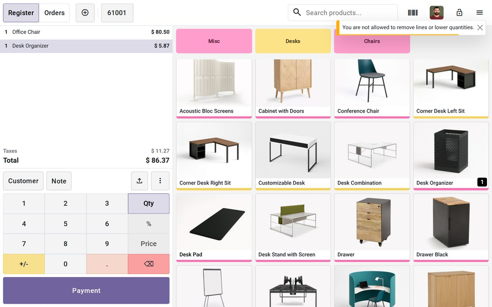
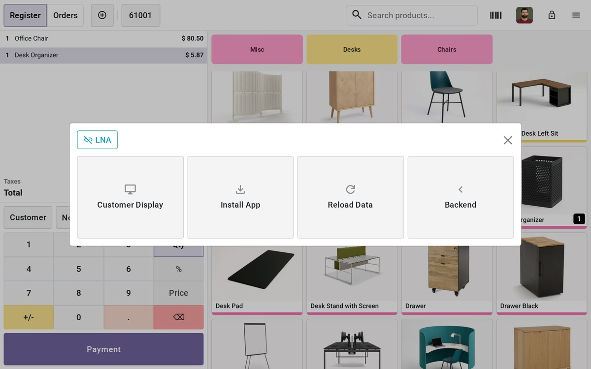
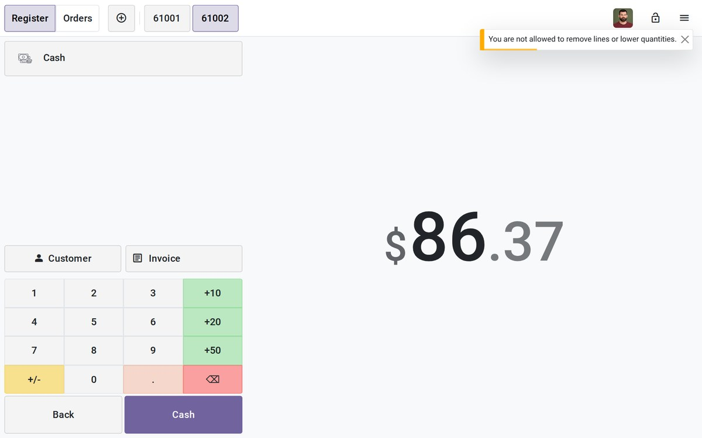
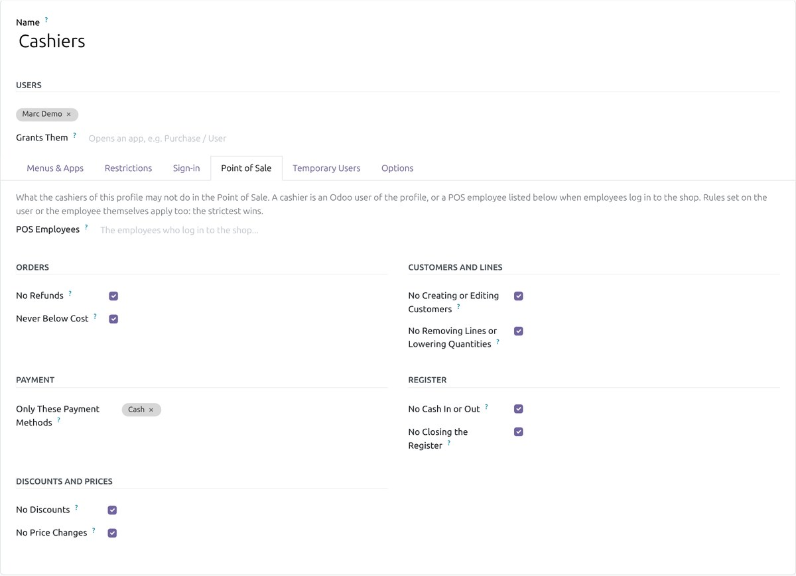
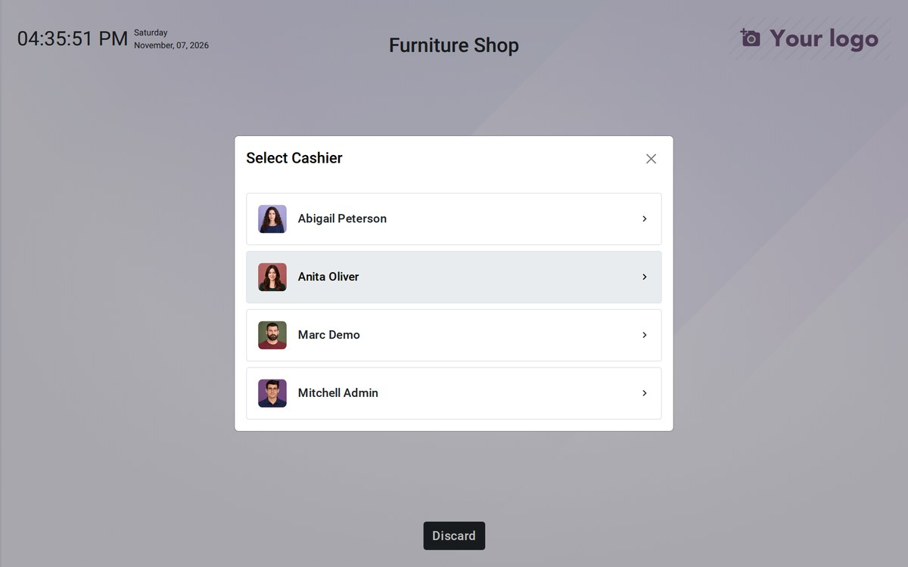
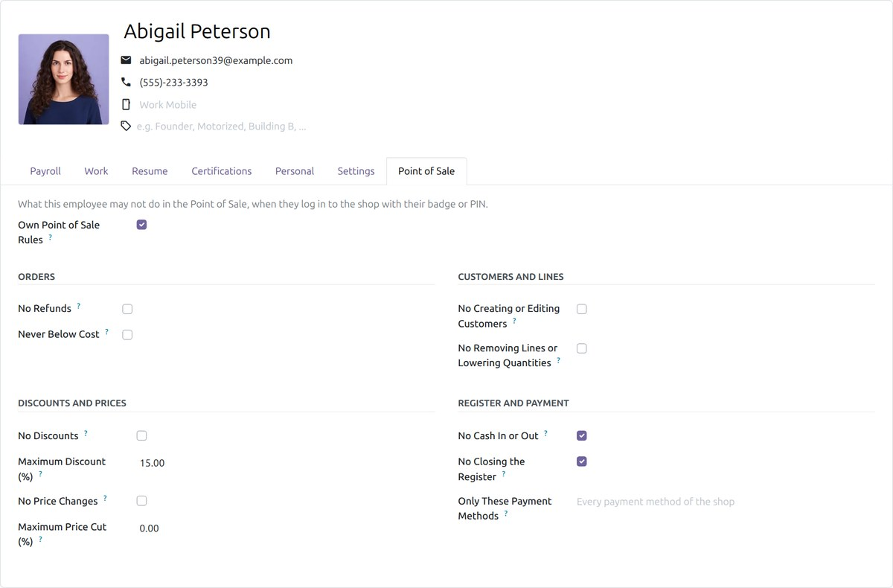

Decide what each cashier may do in the Point of Sale: refunds, discounts,
prices, pricelists, cash, closing, customers and payment methods — on a user, an
employee or an access profile, enforced on the server.
Odoo 18 – 20Community & Enterprise
LGPL-3Free and open source
odoomates@gmail.comOdoo Mates
Contents
Seven parts, from picking the modules to a shop where every cashier has the right rules.
1Before you start
1.1The four modules
1.2Which ones you need
1.3Supported versions
1.4Installing
2The rules
2.1Orders
2.2Discounts and prices
2.3Customers and lines
2.4Register and payment
3Rules on a user
4Rules on an access profile
5Employees with a badge or a PIN
5.1Rules on the employee
5.2Employees on an access profile
6Who gets which rules
6.1The cashier at the till decides
6.2Several sources: the strictest wins
6.3Several profiles
7In the shop, and when something looks wrong
7.1What the cashier sees
7.2What the server checks
7.3Example setups
7.4The usual questions
7.5Getting help
Part 1
Before you start
1.1 The four modules
The Point of Sale rules come in four small, free modules. Each works alone or with the
others: install only what your shop needs.
Module
What it adds
POS Access Controlom_pos_access
The rules themselves, and a Point of Sale tab on the user form to set them. Needs only the Point of Sale.
POS Access Control for Employeesom_pos_access_hr
The same rules on each employee who logs in to the shop with a badge or a PIN.
User Access Manager for POSom_access_manager_pos
The rules on the access profiles of the User Access Manager: set them once on a Cashiers profile for all its users.
User Access Manager for POS Employeesom_access_manager_pos_hr
POS employees listed on access profiles: at the till, the profile's rules apply to them.
1.2 Which ones you need
Your shop
Install
Cashiers log in with their own Odoo user, a few cashiers
POS Access Control
Cashiers log in at the till with a badge or a PIN (Log in with Employees)
POS Access Control + POS Access Control for Employees
You already use the User Access Manager, or have many cashiers with the same rules
User Access Manager for POS (it brings POS Access Control)
Both: profiles and employee login
All four
1.3 Supported versions
Module
Odoo 18
Odoo 19
Odoo 20
POS Access Control
✓
✓
✓
POS Access Control for Employees
✓
✓
✓
User Access Manager for POS
✓
✓
✓
User Access Manager for POS Employees
✓
✓
✓
Community and Enterprise. The User Access Manager itself exists for Odoo 15 to 20; its POS
add-ons for 18, 19 and 20. Its own guide ships in om_access_manager.
1.4 Installing
Put the modules in your addons folder, then in Odoo turn on developer mode, open
Apps and click Update Apps List.
Install POS Access Control.
The other three install by themselves when what they connect is there:
for Employees, once the POS employee login (pos_hr) is installed;
User Access Manager for POS, once the User Access Manager and the Point of Sale are installed;
User Access Manager for POS Employees, once both of the above and pos_hr are.
Open the shop again after a change: the rules load when the shop opens.
No rule, no change
A user or employee with no rule keeps the shop exactly as it is. Managers are not slowed down.
Part 2
The rules
The same rules appear on a user, an employee and an access profile, in four groups. A limit
left at 0 means no limit. When a cashier tries something not allowed, a message
says why.
2.1 Orders
Rule
Effect
No Refunds
The Refund button is hidden, and refunds sent anyway are refused.
Refunds Only From a Receipt
A refund goes through Orders, from the receipt of the sale: a line made negative with the +/- key is refused.
Maximum Refund
The highest amount, taxes included, an order may give back, in the shop's currency.
Never Below Cost
A price or a discount that sells a product for less than its cost is refused.
No Cancelling Orders
Cancel Order is hidden, an order with products cannot be deleted from the list of orders, and cancelling sent anyway is refused.
2.2 Discounts and prices
Rule
Effect
No Discounts
The % key is disabled; orders with a discounted line or the global discount are refused. Refunding a discounted sale stays possible.
Maximum Discount (%)
The highest discount on a line: a higher one is brought down to it.
No Price Changes
The Price key is disabled, and a price below the pricelist is refused.
Maximum Price Cut (%)
How far below the pricelist price a price may be set.
Only These Pricelists
Empty: every pricelist of the shop. Set: only these can be chosen, and orders with another are refused. The price and discount limits are measured against them, so they cannot be dodged by switching pricelist.
A cashier without discounts or price changes: the % and Price keys are off.
2.3 Customers and lines
Rule
Effect
No Creating or Editing Customers
Create and Edit are hidden from the customers of the shop, and saving a customer from it is refused. Choosing a customer stays possible.
No Removing Lines or Lowering Quantities
Once a product is on the order, it cannot be removed nor its quantity lowered: a manager has to. Checked on the shop screen only (the server only sees the final order).

Lowering a quantity: refused, a manager has to.
2.4 Register and payment
Rule
Effect
No Cash In or Out
Cash In/Out leaves the menu and the closing popup, and cash moves sent anyway are refused.
No Closing the Register
Close Register leaves the menu, and closing sent anyway is refused.
Only These Payment Methods
Empty: every method of the shop. Set: only these are shown, and orders paid otherwise are refused.

The menu of a cashier with no cash in or out and no closing.

Only the payment methods allowed: here, cash.
Part 3
Rules on a user
With POS Access Control:
Open Settings › Users & Companies › Users and the cashier's user.
Open the Point of Sale tab.
Tick the rules and set the limits. Save.
The cashier gets them the next time they open the shop.
Monica: no refunds, discounts up to 10%, never below cost, no cash in or out, cash only.
Rules on a user suit a few cashiers. For many cashiers with the same rules, use an access
profile (part 4): set them once, and a new cashier only has to be added to it.
Part 4
Rules on an access profile
With User Access Manager for POS, every access profile gets a Point of
Sale tab with the same rules, grouped as Orders, Discounts and Prices, Customers and
Lines, Payment and Register.
Open Access Manager › Access Profiles and create a profile,
say Cashiers (the template Cashier is a good start), and add its users.
Open the Point of Sale tab and tick the rules.
Every user of the profile gets them the next time they open the shop.

The Cashiers profile: what its users may not do in the shop.
The rest of the profile works as usual, and fits a shop well:
Allowed records › points of sale with Each User's Own: each
cashier sees only their own shop, set on their user form.
Sign-in: working hours, the shop's network, one session per user.
Hide Costs and Margins: no cost or margin on the products and orders.
Preview as User checks the rest of a cashier's access.
Every change of the Point of Sale tab is kept in the history and the versions of the profile.
Part 5
Employees with a badge or a PIN
When the shop uses Log in with Employees, several employees share the till under one
Odoo user. The employee modules make the rules follow whoever is the cashier.

Select Cashier: the rules switch with the employee who logs in.
5.1 Rules on the employee
With POS Access Control for Employees, the employee form has a Point of
Sale tab (visible to HR officers):
Open the employee, tab Point of Sale.
Switch on Own Point of Sale Rules, then tick the rules.
Off, the employee follows the rules of their Odoo user, or else those of the user who opened
the shop.

Abigail: no cash in or out, no closing, discounts up to 15%.
5.2 Employees on an access profile
With User Access Manager for POS Employees, the profile's Point of Sale tab has
a POS Employees field. Add the employees: when one of them is the cashier, the
Point of Sale rules of the profile apply.
The Shop Staff profile: Abigail and Anita get its rules at the till.
Part 6
Who gets which rules
6.1 The cashier at the till decides
The cashier is…
Their rules come from
An Odoo user
Their user form, and their access profiles.
An employee with Own Point of Sale Rules
Their employee form, and the profiles listing them.
An employee listed on a profile
That profile.
An employee with no rules and on no profile
Their Odoo user, or else the user who opened the shop.
The server knows who sent each order, cash move and closing, so the right rules are checked
there too.
6.2 Several sources: the strictest wins
Rules on the profile and rules on the user or employee all apply together. A rule ticked
anywhere applies; for a limit, the lowest one counts; payment methods and pricelists are only
those every source allows.
6.3 Several profiles
Profiles combine as the other rules of the User Access Manager:
A restriction applies when every additive profile of the user carries it,
or any override profile does.
A limit is the loosest of the additive profiles, tightened by the override
ones.
A limit left at 0 on one additive profile means no limit from the additive profiles.
Payment methods and pricelists: an additive profile with an empty list allows them all;
otherwise those of the additive profiles together, narrowed by the override ones.
Example
Sara is in Cashiers (No Refunds, Maximum Discount 10%) and in Senior
Cashiers (refunds allowed, Maximum Discount 20%), both additive. She may refund,
and give discounts up to 20%. To cap every cashier at 10% whatever else they carry, put
the limit on an Override profile.
Part 7
In the shop, and when something looks wrong
7.1 What the cashier sees
No new screen to learn: what they may not use is simply not there (keys off, buttons and menu
entries gone, only the payment methods allowed), and a message says why when they try.
7.2 What the server checks
A button off the screen is not enough, so the server checks every order, cash move and
closing a cashier sends, and refuses what is not allowed. Refunding a discounted sale stays
possible, as do combo parts, rewards and tips. The one rule checked on the screen only is
No Removing Lines or Lowering Quantities.
7.3 Example setups
Role
Rules
New cashier
No Refunds, No Discounts, No Price Changes, No Cash In or Out, No Closing the Register, No Creating or Editing Customers, No Removing Lines or Lowering Quantities.
Cashier
Refunds Only From a Receipt, Maximum Refund 20, Maximum Discount 10%, Never Below Cost, No Cash In or Out.
Shift lead
Maximum Discount 25%, Never Below Cost. May close the register.
Cash-only kiosk
Only These Payment Methods: Cash. Only These Pricelists: the kiosk's.
Manager
No rule: the shop as it is.
7.4 The usual questions
What you see
Why, and what to do
A new rule does nothing
The shop loads the rules when it opens: close the shop tab and open it again.
A profile rule does not apply
The user has another additive profile without it. Add it there too, or use an Override profile (6.3).
An employee gets the wrong rules
Check Own Point of Sale Rules on the employee, and the POS Employees of the profiles (6.1).
The discount is lowered by itself
The Maximum Discount brings a higher discount down to it.
"Not allowed to sell … below its cost"
Never Below Cost is on: check the product cost.
A payment method is missing
Only These Payment Methods is set on the user, the employee or a profile.
7.5 Getting help
Write to odoomates@gmail.com with your Odoo version, the modules installed and
a screenshot of the Point of Sale tab. All four modules are free, under LGPL-3; feedback
makes them better.